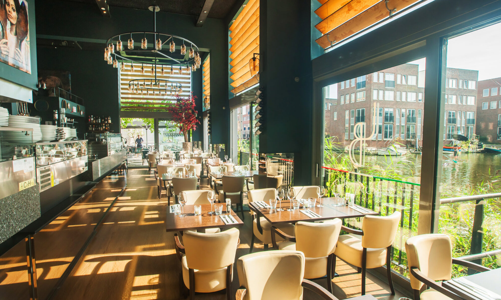
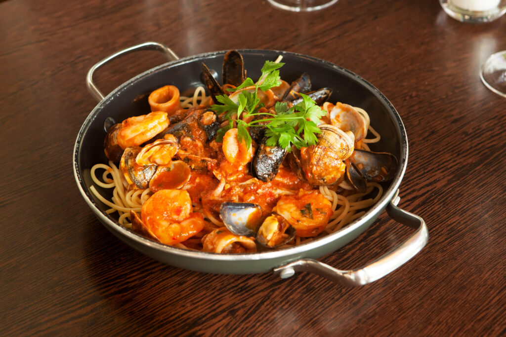
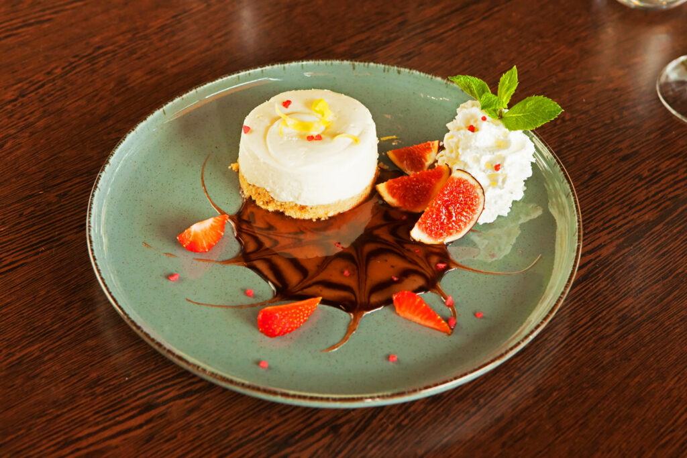
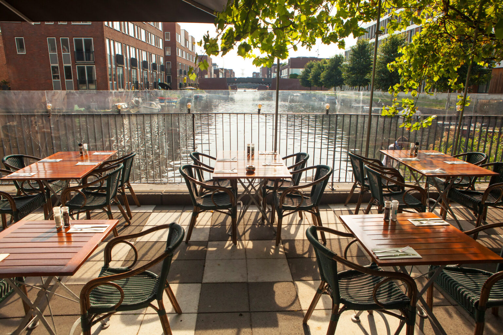
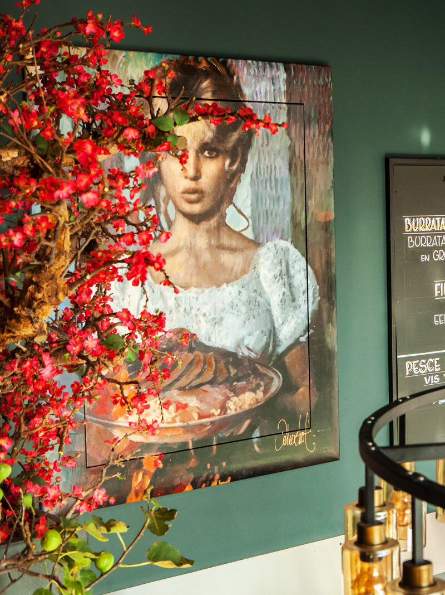

Ristorante en pizzeria aan het water, IJburg
la Bruschetta
Beleef de echte Italiaanse keuken.
Dinsdag t/m zondag 13.00 tot 22.00
Met liefde bereid, aan het water
Haal de traditionele Italiaanse keuken en heerlijke verse pizza's in huis van La Bruschetta. Verse ingrediënten en met liefde bereid.
Wij kijken ernaar uit u in ons sfeervolle restaurant aan het water te ontvangen. Lukt dat niet? Dan bezorgen wij ook bij u thuis.
Bekijk de menukaart


Bezorgen en afhalen
Liever thuis eten? Bestel de Italiaanse keuken en verse pizza's van La Bruschetta online, om te laten bezorgen of zelf af te halen.
- Open voor bezorging
- dinsdag t/m zondag 13.00 tot 22.00
maandag gesloten
Bestellen kan ook met de app van La Bruschetta: gemakkelijk, en zo blijft u op de hoogte van acties en kortingen.
Sfeerimpressie
Kom gezellig langs in ons sfeervolle restaurant aan het water. Klik op een foto om hem groter te zien.

Reserveren
Komt u bij ons eten? Reserveer online, bel ons of stuur een mail.
Dinsdag t/m zondag van 13.00 tot 22.00, maandag gesloten.
Contact en openingstijden
La BruschettaJean Desmetstraat 121
1087 DH Amsterdam (IJburg)
020 226 83 08
info@bruschetta.amsterdam
| Maandag | gesloten |
|---|---|
| Dinsdag | 13.00 tot 22.00 |
| Woensdag | 13.00 tot 22.00 |
| Donderdag | 13.00 tot 22.00 |
| Vrijdag | 13.00 tot 22.00 |
| Zaterdag | 13.00 tot 22.00 |
| Zondag | 13.00 tot 22.00 |
Bezorgen en afhalen op dezelfde dagen en tijden.